Many things in life are seemingly left up to chance. In everyday life, we often hear or say phrases like “That was pretty random.” or “What are the odds of that happening?”, but can you explain what it really means for something to be ‘random’ or ‘up to chance’? Whether you’re a gambler, an anxious student, or just plain sick and tired of the weather recently, you probably want to understand something in your life that seems or feels random.
Probability is an attempt to make sense of this perceived randomness and provide some laws or axioms for describing random processes so that we can investigate them systematically. In practice, we know that a probability describes the chance that some event will (or will not occur), but this answer alone leaves much to be desired. There’s several fundamental questions we’re left to answer.
In my case, the first that comes to mind is “How does one measure a probability?”
A coin toss is the most basic probability model.
In many scenarios, we flip a coin to decide the outcome. For example, if one wants to decide which person goes first in checkers or who has to take out the trash, it’s not uncommon to hear someone say “Let’s flip a coin for it.” Why is this? Is this even fair? What does ‘fair’ even mean when you leave something up to chance like this?
Well, you might say it’s fair because your intuition tells you that around half of the time we toss a coin it should come up heads and the other half tails. More simply said, we have two possible outcomes \(\omega = H\) and \(\omega = T\) which we think are equally likely (whatever that means).
To be precise and consistent, we’ll write these possible outcomes in terms of a set
\[ \Omega = \{ H,T \}. \]

As you can see in the most basic coin toss, there are only two outcomes in this experiment. This is a handy model if we need to make a decision between exactly two possible choice, but what will happen if we have 3, 4, or even 1000 possible outcomes.
Let’s switch to a more complicated example: tossing two coins sequentially. In case of two tosses, we can represent outcomes by looking at the two coin tosses separately. The first toss being \(\Omega_1 = \\{ H, T \\}\) and the second \(\Omega_2 = \\{ H, T \\}\). Putting these together, we can see that we have four possible outcomes
\[ \Omega = \Omega_1 \times \Omega_2 = \{ HH, HT, TH, TT\}. \]
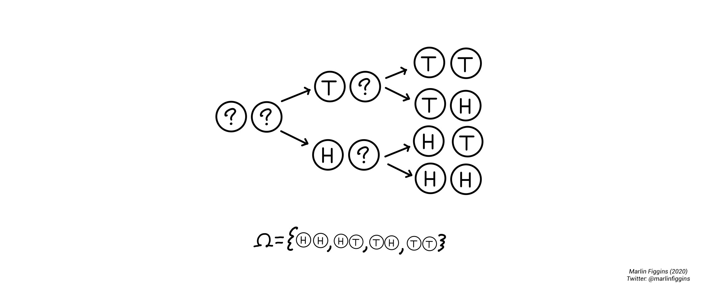
The coin tossing example is extremely neat in that sense that it serves as a nice foundational example for the larger language around probability which we’re trying to develop. As our next step towards that goal, we’ll begin by defining a couple of terms.
An outcome \(\omega\) is a single possible result of a given experiment like the coin tosses above.
The set of possible outcomes \(\Omega\) is called the sample space.
Another important type of objects are events \(E\) which describe some subset of outcomes. Events enable us to ask questions about and compute probabilities concerning several different outcomes simultaneously.
For example, we might ask the question: “When do we have at least one heads?”. We can then look at individual outcomes \(\omega \in \Omega\) which have at least one head and write them as a set
\[ E = \{ \omega \mid \text{There is at least one $H$} \} = \{HH, HT, TH \}. \]
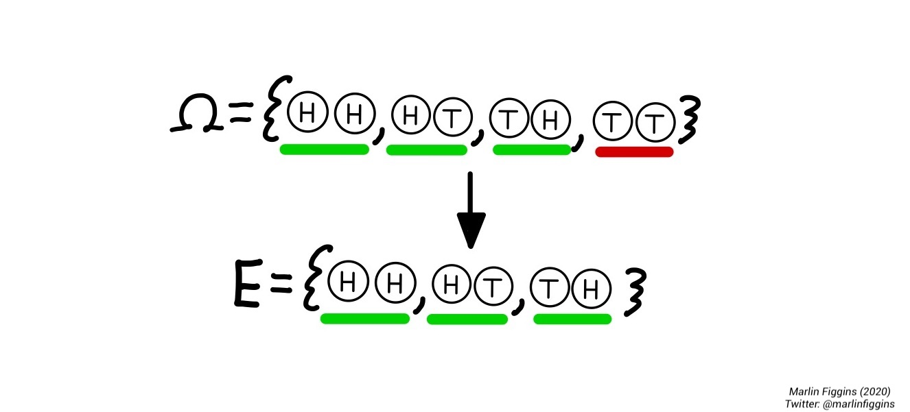
Oftentimes, we’re interested in the case where an event \(E\) does not occur. We call this event the complement of \(E\) and write
\[ E^c = \{w \not\in E \}, \]
which is the set of outcomes in our sample space that are not in \(E\). In the example above where \(E\) is the set where there is at least one \(H\),
\[ E^c = \{ \omega \mid \text{There are exactly zero $H$}\} = \{ TT \}. \]
In the case of two coin tosses, it’s easy enough to count our possible outcomes, but in order to gain a better picture of our coin-tossing experiment in general, we want to understand the specific properties or chances of our outcomes and combinations of them. That is, when discussing events like above, we want to compare and contrast them in various ways. Important tools for this are called the union (\(\cup\)) and intersection (\(\cap\)) of events.
Combining events
The union of two events \(A\) and \(B\) is simply their combination i.e. the event either \(A\) or \(B\) occurs which we write as
\[ A \cup B = \{\omega \in A \textbf{ or } \omega \in B \} \]
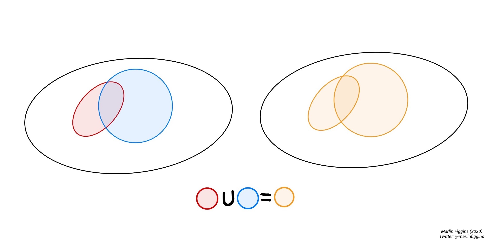
The intersection is the overlap between two events. It is the set of outcomes that are in both \(A\) and \(B\) simultaneously.
\[ A \cap B = \{\omega \in A \textbf{ and } \omega \in B \}. \]
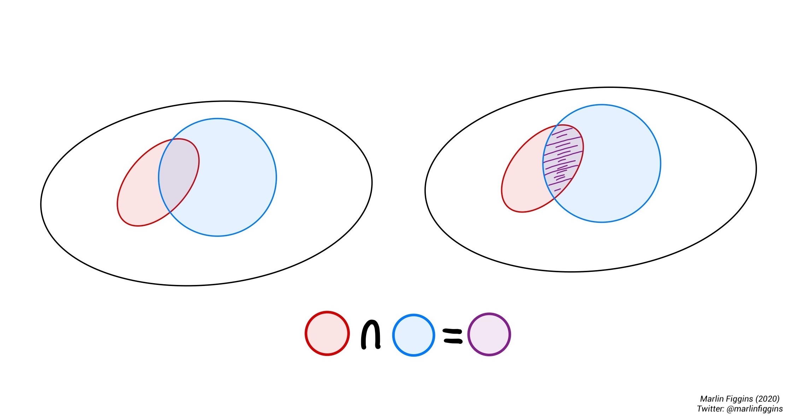
Let’s apply these ideas to the coin tossing example.
Consider the following events. Suppose we flip two fair coins. Let \(A\) be the event where exactly two tosses show heads, \(B\) where the first coin is heads, and \(C\) where the second coin is tails. We begin by writing all of these different events using set notation, so that
\[ A = \{HH\}, B = \{HH, HT\}, C = \{HT, TT \}. \]
First, we’ll find the union of \(B\) and \(C\). In words, this is the event where either the first coin shows heads or the second is tails. In set notation, this is simply:
\[ B\cup C = \{HH, HT \} \cup \{HT, TT \} = \{HH, HT, TT \}. \]
Next up, let’s find the union of \(A\) and \(B\). This is the case where either both coins show heads or the first coin shows heads. Writing this out, we see that
\[ A\cup B = \{HH \} \cup \{HH, HT\} = \{HH, HT\} = B. \]
The event \(A\) is a subset of \(B\) (\(A\subset B\)). You can think about this as follows: If both coins show heads, then the first coin obviously did. This is obvious, but it helps us make a general observation. Sometimes events will completely contain another. If every outcome in event \(A\) is also in event \(B\), we say that \(A\) is a subset of \(B\) and write \(A\subset B\).
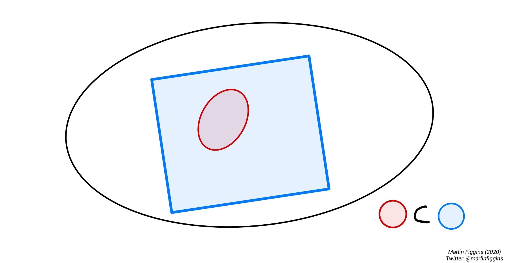
Let’s try our hand with the intersection. Starting with the intersection of \(B\) and \(C\). This is the event where either the first coin shows heads and the second is tails. Using sets, we take the outcomes that \(B\) and \(C\) have in common
\[ B\cap C = \{HH, HT \} \cap \{HT, TT \} = \{HT \}. \]
In this case, our intersection only contains a single outcome \(HT\) i.e. the case where the first coin showed heads and the second showed tails which is exactly what we were looking for.
Our choice of \(B\) and \(C\) lead to us having a very simple intersection, but thee fact remains that some events are disjoint or mutually exclusive, meaning that they do not share any outcomes. Take \(A\) and \(C\) for example. It is impossible for both coins to show heads and for the second coin to show tails simultaneously. We can write this as
\[ A\cap C = \{HH \} \cap \{HT, TT \} = \varnothing, \]
where \(\varnothing\) is the empty set containing no elements.
With the above ideas in mind, how might we want to describe the probability of various events given that we know that the probability of each coin being heads is \(\frac{1}{2}\)? In the next section, we’ll develop axioms for dealing with problems in probability.
Axioms of probability
\[ \newcommand{ \Prob }{ \mathbb{P} } \]
For this section, I’ll loosely follow Foundations of the Theory of Probability by A.N. Kolmogorov.
In a way, we can think of a probability as a way of measuring an event. Much like how people have weights (in both pounds and kilograms), we can think about creating a type of rule or measure \(\Prob\) which weights events and collections of events relative to all possible outcomes. If we’re able to find such a measure, we want it to follow a certain set of rules much like the case of the coin tossing example.
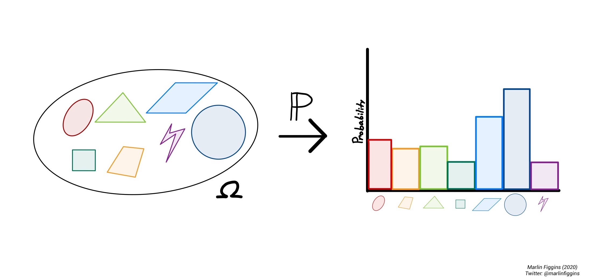
First up is a simple convention, we would like all probabilities that things happen to be \(1\). In the simplest case, an event \(E\) can either surely occur so that \(\Prob(E) = 1\) or it cannot \(\Prob(E) = 0\). Therefore, if we look at all possible outcomes simultaneously, we have \(\Prob(\Omega) = 1\).
Since all probabilities are positive or zero, we also require that \(\Prob(E)\geq 0\) for all events \(E\).
Lastly, if two events cannot occur simultaneously i.e. \(A \cap B = \varnothing\), then \(\Prob(A \cup B) = \Prob(A) + \Prob(B).\)
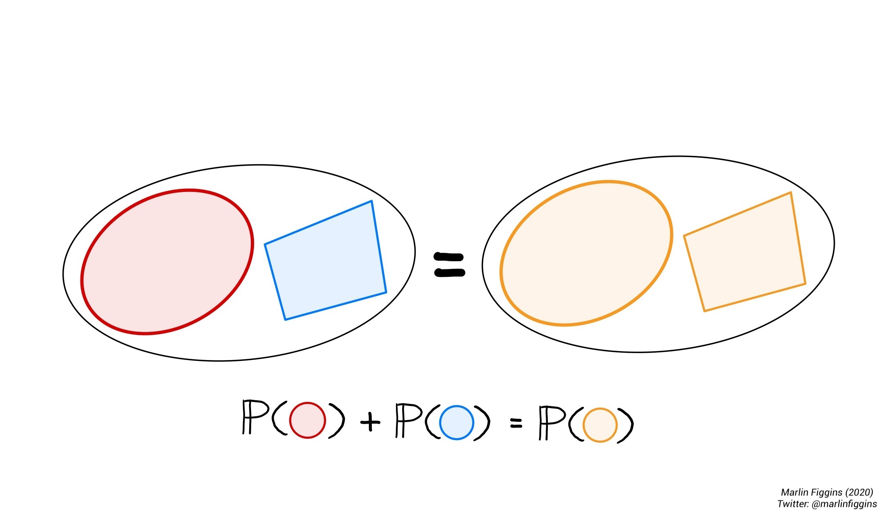
Therefore, our notion of probability must follow these three fundamental rules:
\[ \begin{align} \Prob(\Omega) &= 1,\\ \Prob(E) &\geq 0 \text{ for all events } E,\\ \Prob(A \cup B) &= \Prob(A) + \Prob(B) \text{ if } A \cap B = \varnothing. \end{align} \]
We call these three rules our axioms of probability. They define a way of thinking about probability that is both consistent with our intuition and mathematically useful. If you’ve seen probability before, you’ll probably notice that our three axioms are missing some of the basic statements of probability you’ve previously encountered. Most of those statements are the logical consequences of the axioms we’ve outlined. In this sense, our axioms are a way of describing probability with minimal assumptions. Namely, with these axioms alone, we can show that
\[ \Prob(A) \leq \Prob(B) \text{ if } A \subset B. \]
This also makes sense if we return to the intuition of counting outcomes. If there are more possible outcomes in \(B\), then you expect that the chance \(B\) occurs is greater than the chance that \(A\) occurs as there are now more outcomes to choose from.
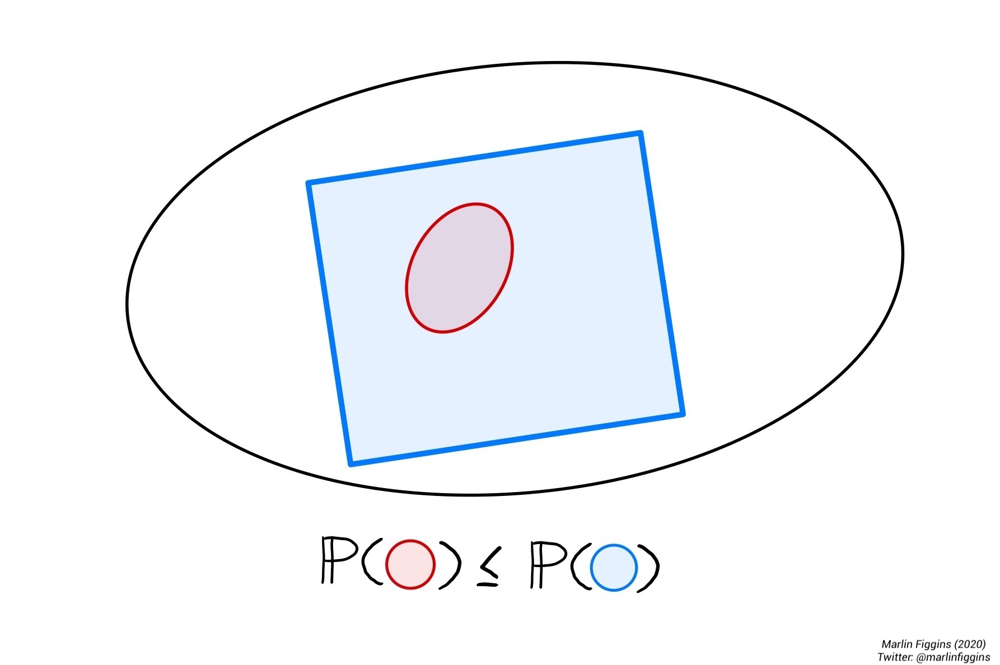
When it comes to taking the union of subsets, there’s a more general formula for subsets which may or may not have overlap.
\[ \Prob(A \cup B) = \Prob(A) + \Prob(B) - \Prob( A \cap B ). \]
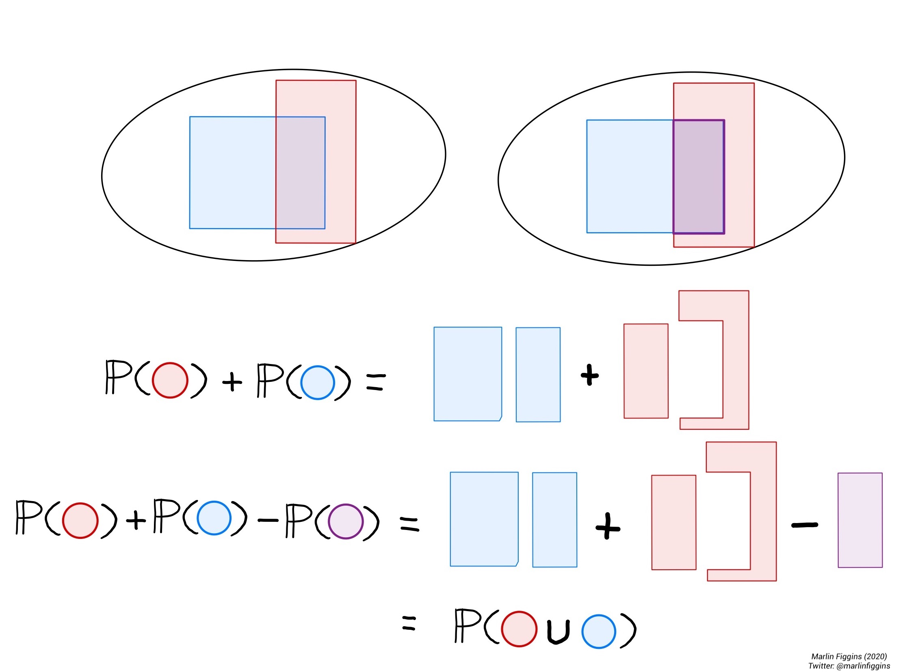
Formal note: Though it is tempting to say that the set of measurable sets contains every subset, this can sometimes lead us to some strange contradictions. The idea of a permissible collection of measurable sets is formalized by a \(\sigma\)-algebra. You can learn a bit more about this on wikipedia.
Conditional probability and independence
As shown previously, the overlap between events is an important consideration when dealing with probability. Due to this overlap, we might want to ask what is the probability of an event \(A\) occurring if we have already observed \(B\). This is the notion of conditional probability. We can calculate the probability of \(A\) given \(B\) as
\[ \Prob(A\mid B) = \frac{\Prob(A\cap B)}{\Prob(B)}. \]
Intuitively, this allows us to investigate how much additional certainty knowledge of event \(B\) gives us on event \(A\).
If knowing \(B\) gives no information on whether \(A\) occurred, we say that \(A\) and \(B\) are independent. Mathematically, we write that two events \(A\) and \(B\) are independent if
\[ \Prob(A\cap B) = \Prob(A) \cdot \Prob(B). \]
This is equivalent to saying that \(\Prob(A \mid B) = \Prob(A)\) and \(\Prob(B \mid A ) = \Prob(B)\) which I leave to you as an exercise.
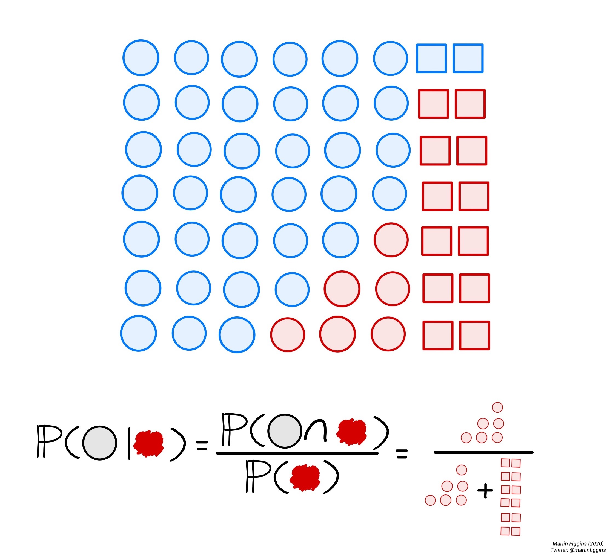
Conditional probability is extremely useful because it gives a framework for understanding how certain properties of events may depend on or relate to one another.
Exercise: Prove that \(A\) and \(B\) are independent if and only if \(\Prob(A \mid B) = \Prob(A)\) and \(\Prob(B \mid A ) = \Prob(B)\).
Exercise: Prove the Law of Total Probability i.e. that for any two events \(A\) and \(B\):
\[ \Prob(A) = \Prob(A \mid B) + \Prob(A \mid B^c). \]
Bayes’ theorem.
One particularly important usage of conditional probabilities is Bayes’ theorem. Bayes’ theorem allows us to use the probability of \(A\) given \(B\) to calculate the probability of \(B\) given \(A\). This notion is particularly useful when it comes to analyzing how evidence in terms of data affects the likelihood of different probability distributions. Bayes’ theorem is essential for understanding many of the statistical methods used in computational biology and most computational fields which rely on Markov Chain Monte Carlo (MCMC) for fitting models to data.
Mathematically speaking, Bayes’ theorem states that
\[ \Prob(A\mid B) = \frac{\Prob(B \mid A) \cdot \Prob(A)}{\Prob(B)}. \]
In fact, the proof is simple enough that can derive this directly by writing out the conditional probabilities for \(A\) and \(B\),
\[ \begin{align} \Prob(A\mid B) &= \frac{\Prob(A \cap B)}{\Prob(B)},\\ \Prob(B\mid A) &= \frac{\Prob(B \cap A)}{\Prob(A)}. \end{align} \]
Solving for \(\Prob(A \cap B) = \Prob(B \cap A)\) gives us,
\[ \Prob(A \mid B) \cdot \Prob(B) = \Prob(A \cap B) = \Prob( B \mid A) \cdot \Prob(A) \], so that
\[ \Prob(A\mid B) = \frac{\Prob(B \mid A) \cdot \Prob(A)}{\Prob(B)}. \]
This may seem like just another unmotivated equation, but Bayes’ has a useful interpretation when it comes to discrete probabilities. We’ll explore this is the following example.
Application: Vampire Hunting with Bayes’
Suppose that we’re the average American and we’re deeply concerned with discovering vampires Given that vampires are a one in a million occurrence, we can use Bayes’ theorem alongside the fact that a limited number of people are allergic to garlic and that all vampires are allergic to garlic to ‘test’ for vampires. Let’s write this in terms of probabilities. According the what we’ve written above, we know three things:
\[ \begin{align} \Prob(V+) &= \frac{1}{1000000} = 0.000001,\\ \Prob(G-\mid V-) &= \frac{1}{10000} = 0.00001,\\ \Prob(G- \mid V+) &\approx 1, \end{align} \]
where \(V+\) is vampirism positive, \(V-\) is human, \(G-\) is garlic allergy, \(G+\) is garlic tolerant. Plugging this into Bayes’ theorem, we can calculate the probability of being a vampire if you’re allergic to garlic
\[ \Prob(V+ \mid G-) = \frac{\Prob(G- \mid V+) \cdot \Prob(V+)}{\Prob(G-)}. \]
We have all the values to compute this value except for the probability of being \(G-\). We can compute this by taking advantage of the conditional expectation and the Law of Total Probability. That is, we write that
\[ \Prob(G-) = \underbrace{ \Prob(G-\mid V+) \cdot \Prob(V+) }_{\Prob(\text{Garlic-allergic vampires})} + \underbrace{ \Prob(G-\mid V-) \cdot \Prob(V-) }_{\Prob(\text{Garlic-allergic humans})}. \]
Therefore, the probability that someone is vampire given they’re allergic to garlic
\[ \Prob(V+ \mid G-) = \frac{\Prob(G- \mid V+) \cdot \Prob(V+)}{ \Prob(G-\mid V+) \cdot \Prob(V+) + \Prob(G-\mid V-) \cdot \Prob(V-)}. \]
Thinking of this in terms possible outcomes, this equation shows that probability of being a vampire given a known garlic allergy is the just fraction of garlic-allergic individuals who we expect to be vampires. Since garlic allergy is much more common among vampires, testing first for garlic allergies allows us to have a higher probability of correctly identifying vampires. Computing with the probabilities given above, we find that
\[ \Prob(V+ \mid G-) \approx 0.01 >>> \Prob(V+) = 0.000001. \]
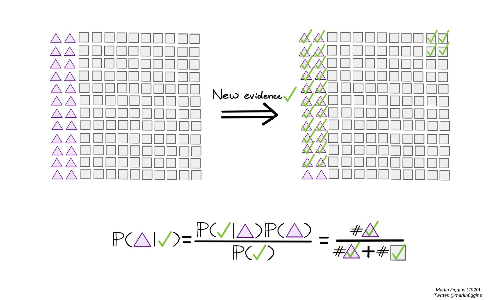
Testing for a garlic-allergy means that we’ll be nearly 10,000 times more likely to successfully identify a vampire than if we just randomly tested or sampled the population for vampires. Though vampires are still rare among those with garlic allergies, we’ve managed to increase the probably of them being identified through the garlic test. There is still hope though. By this same logic, the better our ability to test for vampires and their unique characteristics, the easier it becomes to identify them using Bayes’ Theorem. That means that we can use other methods for identifying vampires such as mirrors and our garlic test together to further increase this probability by considering the probabilities jointly. That being said, please don’t go frolicking your neighborhood waving around garlic and hand mirrors, it’s improbable you’ll find anything.
This post is the first part of a series where I’ll be going over some of the basic ideas behind the basic probability and stats used in my daily research. Next up, I’ll be writing about probability distributions and estimating parameters for them. For a more thorough introduction to probability, I recommend “Theory of Probability and Random Processes” by Koralov and Sinai.
Thank you for taking the time to read! - Marlin Figgins.